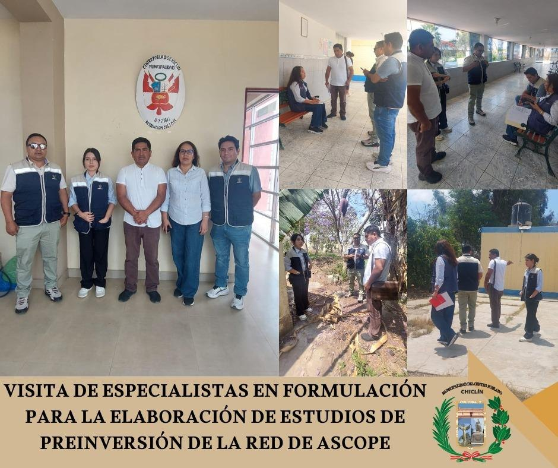

Visita de especialistas para los estudios de preinversión en salud
La Municipalidad recibió a la Ing. Lucy Cecilia Rojas Sánchez, especialista en formulación de estudios de preinversión, y a su equipo técnico, para iniciar las acciones de creación del Servicio de Atención de Salud Básica en Chiclín.
La visita permitirá que especialistas realicen los estudios del Centro de Salud: infraestructura, recursos humanos y mejores condiciones de atención para la población.
